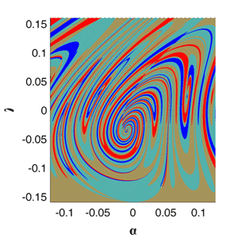

Very, Very Strange Butterfly Effect 
The "Butterfly Effect", or more technically the
"sensitive dependence on initial conditions",
is the essence of chaos.
This is illustrated in the accompanying applet of the Lorenz Attractor.
Note the parameter values are a bit other then the canonical ones.
What causes this change in the dynamics of the Lorenz model?
Explanation award is USD $200.
Send your comments to ashilnikov[at]gsu.edu

Java codes by
Michael Cross, mcc@caltech.edu